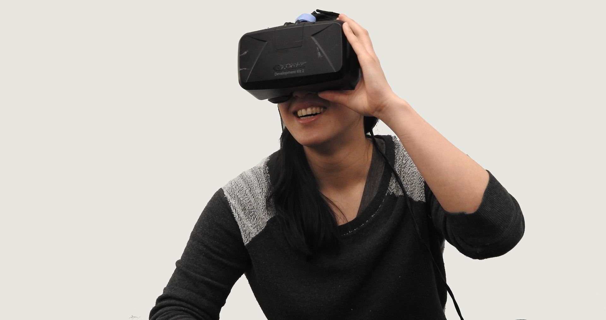

© HammerandTusk / pixabay
Gør den virtuelle verden til den rigtige verden
Virtual Reality // 9. Okt. 2017
Virtual Reality har i de seneste år været trending fordi emnet bliver videreudviklet så hurtigt på kort tid. Virtual Reality lyder som om det er et emne der hører under spil genren, men det er ikke helt sandt.
Det er rigtigt nok at i spil genren er Virtual Reality et stort marked, og det vil det blive i lang tid. I spil genren bruges Virtual Reality for det meste til rutsjebane spil og 'horror' spil hvor man bedre kan få følelsen at være hos et "haunted house". Men Virtual Reality spil prøver hårdt ved at slå igennem andre genre, så som skydespil.
Virtual Reality som træning
Virtual Reality kan bruges til en masse forskellige slags træning. Herunder er en af dem en faldskærmstræner. I brug sammen med en flysimulator kan det være uvurderlig god træning som kan bruges som tillæg til praksis træning.
Medicinsk Virtual Reality
Virtual Reality kan også bruges på den pædagogiske side af ens liv. For eksempel kan folk som er kronisk syge og ikke har mulighed at komme i skole gør brug af Virtual Reality og få følelsen at være i skole og stadig lære videre.
Som terapi afprøves Virtual Reality også. Der er mange som går rundt med en form af fobi og med hjælp af Virtual Reality prøver man godt som muligt at arbejde igennem det.